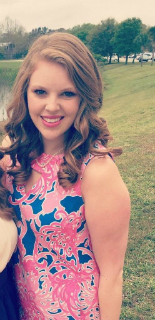

-- Bridesmaids --
Ashley

Ashley is Taylor's Matron of Honor and one of her oldest friends. They met when they were four years old in the Sunday school class that Taylor's mom taught at their church. Taking on middle school, high school, and college together was an incredible adventure that neither one of them will ever forget. And although they have had their ups and downs, as every friendship does, they call each other "sister" because that's exactly what they are. Taylor feels so honored to have Ashley, not only be one of her MoH's, but also a constant friend that she knows will be there until the end.
Kelsey
Kelsey is Taylor's Maid of Honor! They have known each other since they were kids, but truly became best friends when they were entering their freshman year of high school. As they like to say, Taylor and Kelsey go together like shaving cream and instant mashed potatoes, an interesting story with some hilarious photographic evidence from high school. Kelsey has been Taylor's calm sea and counselor. She's the best for giving advice from both sides and never lets the distance between Florida and Tennessee get too wide. Taylor's beyond happy that Kelsey is making the trip to stand beside her on such a special day.
Bianca
Bianca is one of Taylor's future sisters-in-law! After their first time meeting, Taylor could tell that she and Bianca would get along perfectly. She's so bubbly, friendly, and a genius at making everyone around her feel like they are included...probably what makes her such an amazing nurse. They share a mutual love of Taylor Swift, Scandal, travel, and crafting. Taylor is so excited to not only call her a bridesmaid, but now a sister.
Jerilyn
Jerilyn is also one of Taylor's future sisters-in-law! Over the last few years, it has become abundantly clear that Taylor and Jerilyn share the same sarcastic, witty sense of humor. And it has been so fun with them both living in Orlando and both being UCF Knights! Jerilyn is such a strong and determined woman, who always has the best ideas and advice on getting to where you want to be. She has so much ahead of her and Taylor is so happy to be able to call her a sister while being there to see her achieve her dreams!
Kaitlyn
Kaitlyn is Taylor's Little Sister from her time in Theta Alpha Christian Sorority at UCF! From the first time they met, Taylor knew she wanted Kaitlyn as her Little. Kaitlyn is not only an incredible friend, but she is a passionate, creative, one-of-a-kind person who motivates and inspires everyone she meets. Kaitlyn is great for listening and great for a good laugh when you need one. She has been there for Taylor nonstop since they met four years ago. Taylor is so grateful that Kaitlyn has become her Little, her best friend, and now her bridesmaid.
-- Groomsmen --
Porfirio
Porfy is Shane's Best Man and is like the brother he never had. They literally spent as much time as they could together when Shane lived in south Florida. Porfy still owes Shane way too much gas money from the many years he drove him around, but other than that, he was always there for Shane when he needed him. When Shane moved to Orlando, because of college, they still communicate pretty much every day in the form of playing video games with each other. Their friendship as been constantly growing and Shane is glad that Porfy is part of his life!
Gabriel
Gaby is Angel's younger brother who used to annoy him, like a little brother would, when they were both younger. As they got older, their friendship started to change in ways that Shane never expected. Gaby started looking up to Shane like he was his older brother. Shane's attitude towards him drastically changed when he started asking him for life advice. If it wasn't for the Atlantic Ocean separating them, they would be hanging out pretty much every day. Living in different countries has put a bit of a gap in their relationship, but that gap is closed when they're online together on the computer enjoying their favorite hobbies.
Angel
Oh, Angel! This is the guy that always had some new toy, game, anything to play with when he and Shane were growing up. Other than seeing his other important family in Puerto Rico, Angel and Gaby were the only two people that Shane wanted to spend time with. Not only was Angel his cousin, they were great friends. Shane knows the brother pattern has been repeated, but Angel is the older brother Shane never had growing up. Things have changed now that he has an amazing girlfriend, Dora, but still to this day, when Shane comes to visit, Angel is still showing up with some new game that he always has to beat him in!
Mark
If you ask them, Amanda (Mark's fiancée) and Mark will deny that Shane brought those two lovebirds together. Mark and Shane created a great friendship when they were working at Publix. Mark has been a better vet towards Shane's dog then an actual doctor he would spend $100+ on and their double dates have been the best that he has ever been on. They both enjoy gaming, board games, and solving puzzle
s to escape from a room! Their common interests is what makes their friendship legit.
Thomas
Thomas is the bride's YOUNGER brother. People don't seem to get the younger part right! Out of all of Shane's 'brothers', he is very excited to officially call him his brother-in-law. Thomas has accepted Shane into his family with no problem at all. He is very easy to talk to and has one of the best personalities Shane has ever witnessed. Shane might not pay much attention to sports but, just like the other groomsmen, they do have a common interest in video games. Taylor's favorite memory of them bonding together was after meeting Thomas for the second time, they just sat down and started playing on the PS4. They were talking to each other like they had known each other for years. That was the moment where Shane knew he was going to be an amazing friend and an awesome YOUNGER brother!


{kind=link}
{kind=link}
{kind=link}
{kind=link}
{kind=link}
{kind=link}
{kind=link}
{kind=link}
{kind=link}